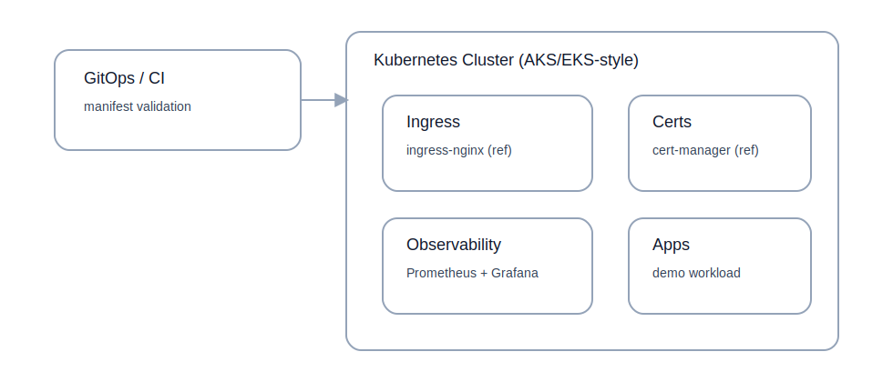

Jeremiah Cargill
Senior Infrastructure & Platform Engineer
Home
Projects
Resume
About
Contact
Light mode
Kubernetes Platform Automation
Repository →
Architecture (sanitized)

Key Patterns
Platform vs application separation (baseline add-ons vs workloads)
CI validation for manifests
Operational readiness artifacts (runbooks, incident templates)
Safe defaults and governance patterns (reference)
What this demonstrates
How platform teams enable developers with consistent Kubernetes foundations
Baseline add-on patterns (ingress, certs, observability)
Operational thinking: runbooks, troubleshooting steps
Repeatable deployment patterns without leaking real cluster configs
Recommended next enhancements
Add least-privilege RBAC examples
Add HPA + PodDisruptionBudget examples (reference-safe)
Add GitOps-style overlays (kustomize/helm)